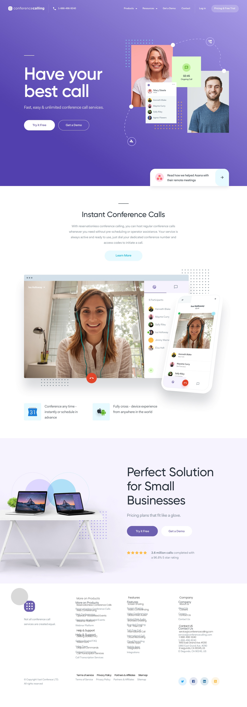
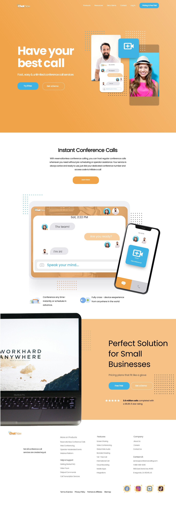

Warmer identity
I replaced the purple-led palette with orange, using blue selectively to make key actions and interface elements stand apart.
High-fidelity UI challenge · Conference-calling homepage
I used a purple homepage as a visual reference and created a warm orange interpretation. Comparing the two shows how I worked within an existing structure while making deliberate choices about hierarchy, imagery and visual identity.


01 · Challenge / reference
The starting point was a long-form desktop landing page for a conference-calling service. The purple screen is the supplied visual reference, not my design. My task was to produce a high-fidelity interpretation rather than invent a different product.
The palette, type treatment, imagery, call-to-action styling and supporting layouts. These gave me room to create a distinct brand feel while keeping the experience recognisable.
02 · My approach
I developed the direction beyond the first screen so the hero, content sections and final call to action would feel like parts of the same interface.
I replaced the purple-led palette with orange, using blue selectively to make key actions and interface elements stand apart.
I kept the headline and trial/demo choices prominent, then gave the following sections distinct visual pauses.
I composed people, chat and device imagery to make the calling experience visible, not just described in copy.
I repeated rounded buttons, bright accents and graphic details across the page to connect the sections.
03 · Before / after
The full-page views show what remained structurally familiar and where the visual direction changed. The purple version is the reference; the orange version is my high-fidelity design.
04 · What I learned
This project helped me practise translating a reference into a new high-fidelity interface without losing the message or path through the page.
This is a high-fidelity UI exercise. I have not tested either version with users, so the comparison describes design decisions rather than measured usability outcomes.
Explore the work
Explore the designed page in its original Figma file.